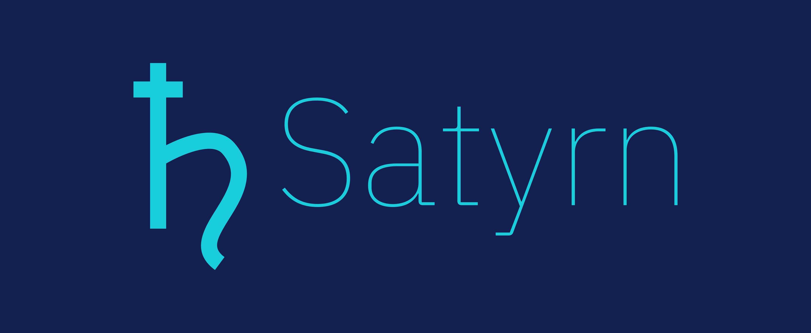

Untitled.SATX
Connected
0.8.6
File
New Graph
Load Graph
Make a Copy...
Save Graph as...
Save as .py
Rename...
Close and Halt
Edit
Create Cell
Cut Cell
Duplicate Cell
Delete Cell
Cell
Run All
Run Cell
Set as Markdown
Set as Python
Kernel
Interrupt
Reset Runtime
Clear Output
Reset Graph
Reset & Run All
Shutdown
Help
Tour
Keyboard Shortcuts
Video Tutorial